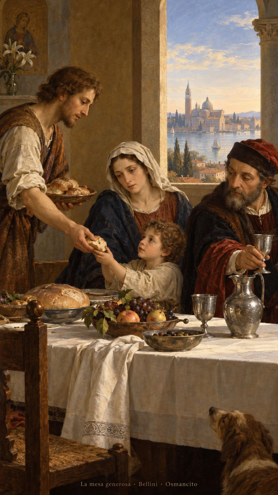
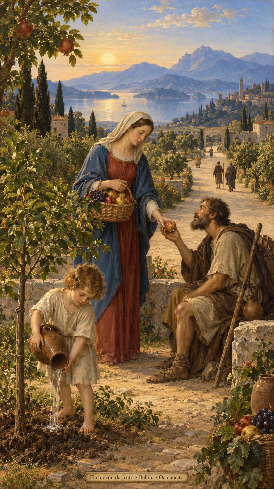

13 de octubre de 2026
¡Buenos días!
La mesa generosa
3
lo único que vale es la fe, que actúa a través de la caridad.
Gálatas 5,6. Fuente
Que la libertad no se nos quede en palabras y encuentre manos dispuestas a compartir. Que limpiemos por dentro la copa de nuestros días, donde a veces guardamos miedo, orgullo y cuentas pendientes. Que el pan alcance a quien llega cansado y nuestra mesa no pregunte cuánto merece. Que caminemos por un camino ancho, sin encerrar el corazón en medidas. Que la confianza dé fruto en cariño y el cariño vuelva más habitable la mañana.

- La mesa y el pan compartido recogen la invitación de Lucas 11 a dar de lo que tenemos.

- El fruto ofrecido encarna la fe que actúa por la caridad, en Gálatas 5. El camino amplio recuerda el Salmo 118.
¡Feliz martes 13 de octubre!
😊🙋♂